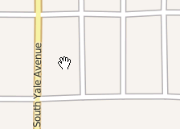

Once you have an HTML element to target, you can call the geographic map widget's function.
.geomap( options )
The widget creates an interactive map. Users can pan and zoom on desktop and mobile browsers against many different cached tile sets or dynamic map servers. Developers can handle events triggered by user action.
The options argument is a JavaScript object that configures the map widget during the first instantiation on a div. No options are required. By default the map will show the whole world using the OpenStreetMap tile set.
The map view refreshes when you change these properties: bbox, center, services, tilingScheme & zoom.
Determines how the map, user & developer interact
All event callbacks receive two arguments: the original browser event and an object specific to the map action.
The units in the map event depend on the way you initialize the map widget and whether or not you set $.geo.proj to null.
Like jQuery UI widgets, geomap triggers events directly on the original map div.
Programatic changes to properties do not trigger events.
The dblclick event is special in that you can prevent the default action by calling e.preventDefault() in your callback. This is currently the only geomap event that you can prevent the default action. Calling preventDefault in the callback of any other geomap event has undefined results.
There are two geomap event types. The type of event determines what is sent to your event handler as the second argument, geo.
With position events the geo argument to your callback is a JavaScript object having two properties: pixels & coordinates. Even though they are both plural, both are a single GeoJSON position, i.e., an array containing the x and y value. The geo.pixels property is in pixel coordinates based on the current map view and geo.coordinates is in map coordinates. If $.geo.proj is not the coordinates argument sent to your callback is geodetic, i.e., coordinates[0] is longitude and coordinates[1] is latitude. If $.geo.proj is null, the coordinates argument sent to your callback is in map coordinates based on the tilingScheme for tiled maps and bboxMax for shingled (dynamic) maps.
In the geo argument we named the coordinates property as such so that the geo object itself matches the specification of a GeoJSON Point and can be used in other functions requiring such a structure. The pixels property is plural to match the tense of coordinates.
With bbox events the geo argument to your callback is an object with single property, bbox, which is a GeoJSON bounding box in map coordinates. If $.geo.proj is not null the bbox values are sent to your callback are geodetic. If $.geo.proj is null, the bbox values sent to your callback are in map coordinates based on the tilingScheme for tiled maps and bboxMax for shingled (dynamic) maps.
The geomap widget provides some methods to help make interacting map data a little easier.
The geomap widget itself does not create many DOM elements worth theming. There are exceptions but they are not included in this initial test release.